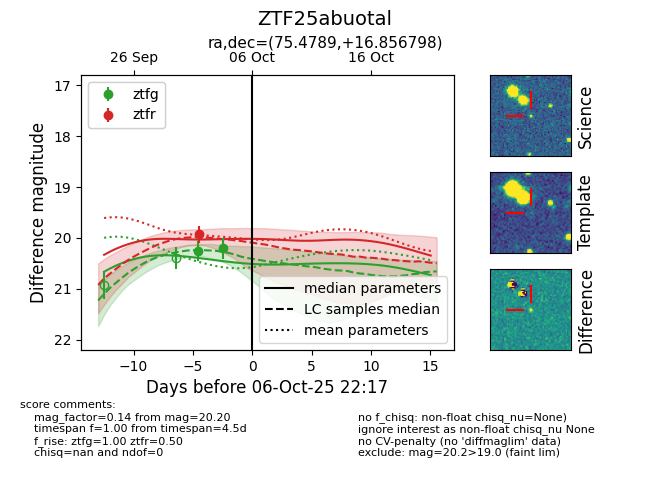
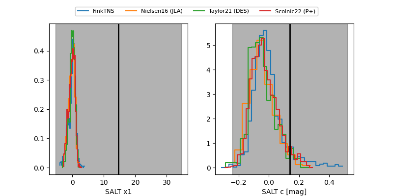

FINK: ZTF25abuotal
Lasair: ZTF25abuotal
ALeRCE: ZTF25abuotal
ZTF25abuotal (ztf,fink)
equatorial (ra, dec) = (75.4789,+16.85680)
galactic (l, b) = (184.5695,-15.03984)


last ztfg=20.20, ztfr=19.92
2 ztfg, 1 ztfr detections